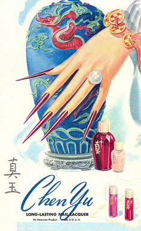

Nail Tech
Nail tech is all about nails and designing your nails on your hands and feet . How to make them beautiful and keep them looking nice and help you learn strategies on how to take care of them.
Nail Tech began over 5,000 years, women and men have maintained well-kept nails with the help of nail technicians. When your nails are taken care of, it shows that he or she takes care of himself or herself. In china a long time ago, the color of your nail was based on what social class you were in and belong
